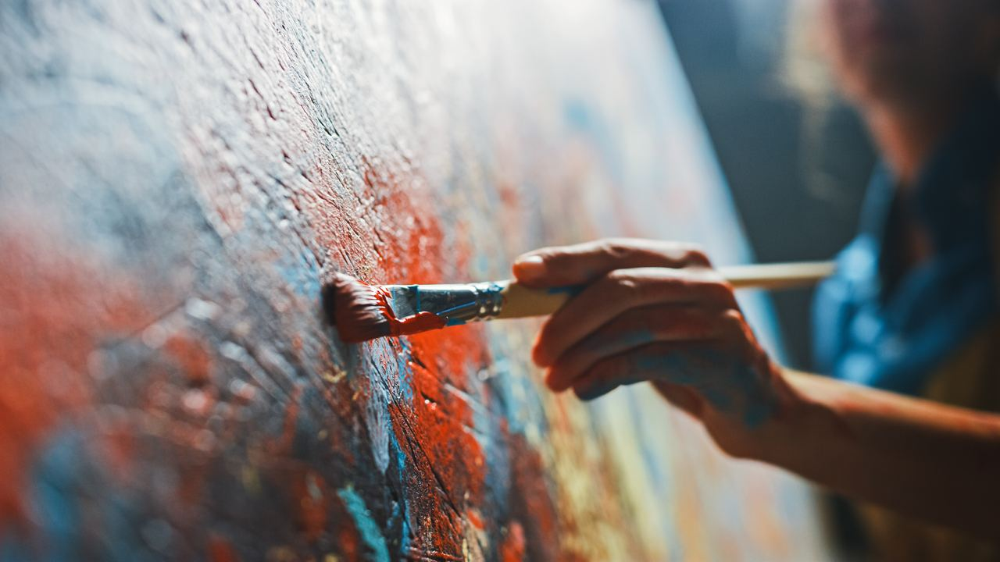
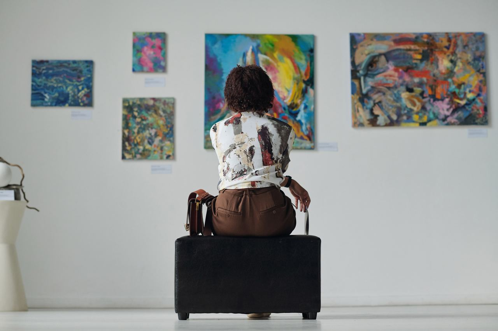

Das Isabella-Edel-Museum – Übersehene Frauen und ihre Werke
„Natürlich finden wir Frauen in sämtlichen Museen: Als Besucherinnen. Und als Aktmodelle. Manchmal habe ich den Eindruck, als Frau kommt man dort am besten rein, wenn man nackt ist.“

Macherin statt Muse
Frauen sind in deutschen Kunstmuseen noch immer unterrepräsentiert: Weniger als 10 Prozent der ausgestellten Bilder wurden von Künstlerinnen gemalt. Das Isabella-Edel-Museum gibt nun ausschließlich Frauen eine Bühne: Eine Auswahl aus über 300 Kunstwerken von 42 Künstlerinnen ist in vier Räumen zu sehen.
- 300Kunstwerke
- 42Künstlerinnen
- 4Räume

„Wann immer wir auf Beschriftungen in einem Museum „Werkstatt“ oder „unbekannter Künstler“ lesen, sollten wir in Betracht ziehen, dass dieses Bild möglicherweise von einer Frau stammt, deren Leistung nicht gewürdigt wurde.“